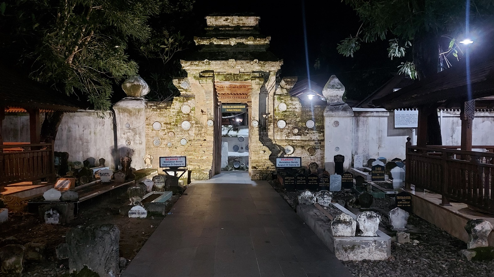
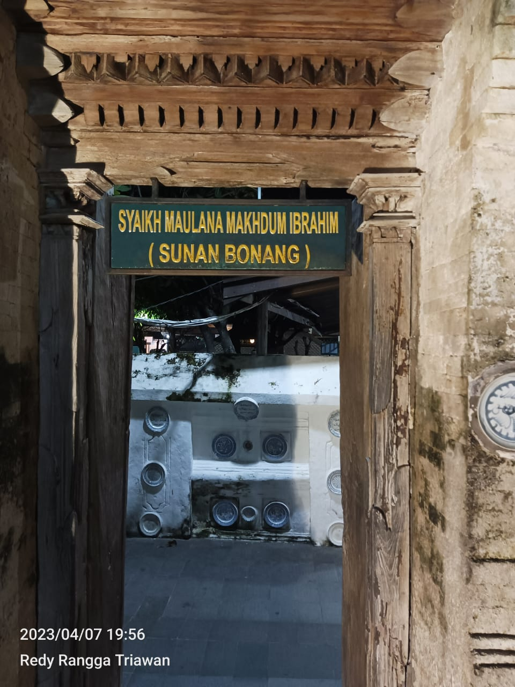
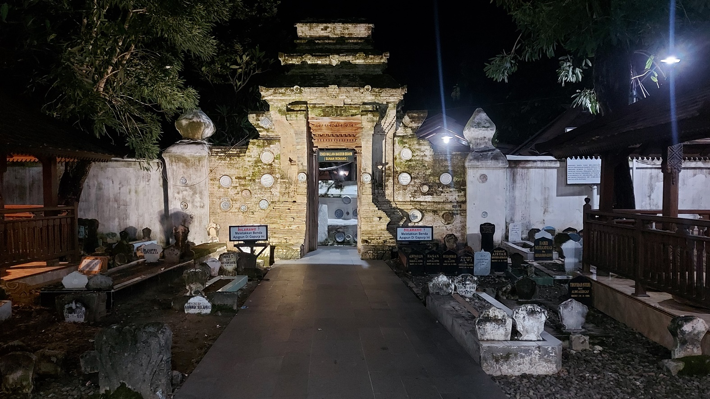
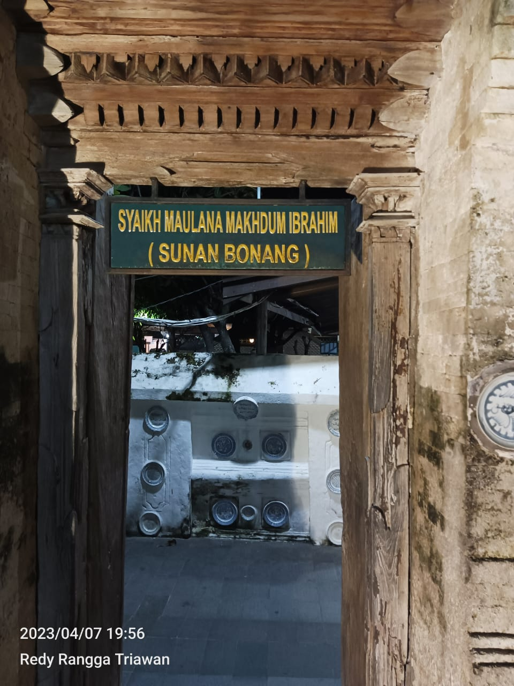
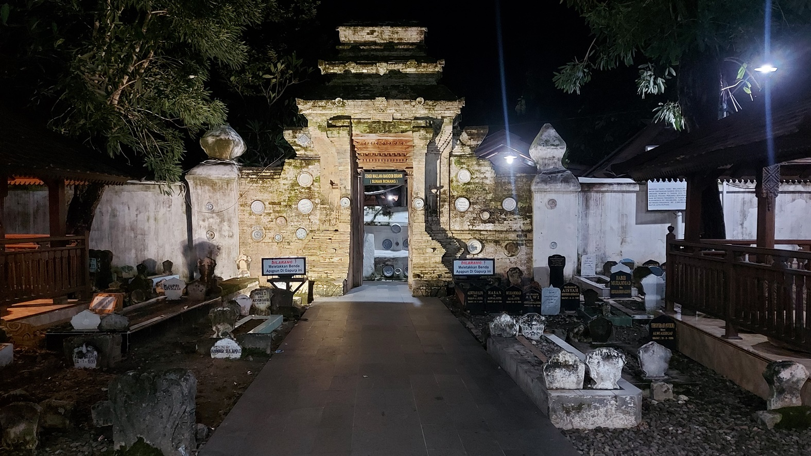
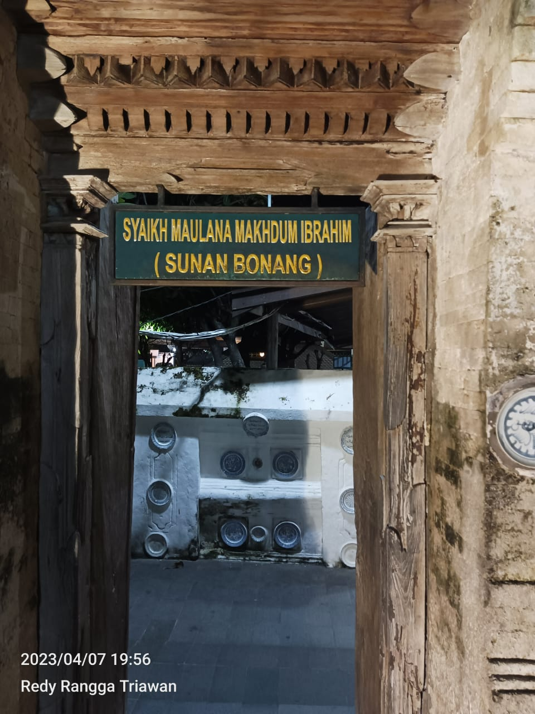
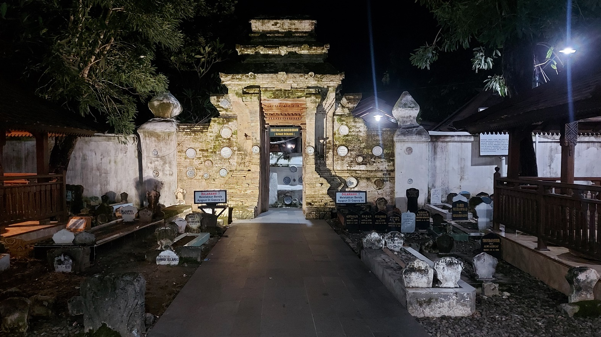
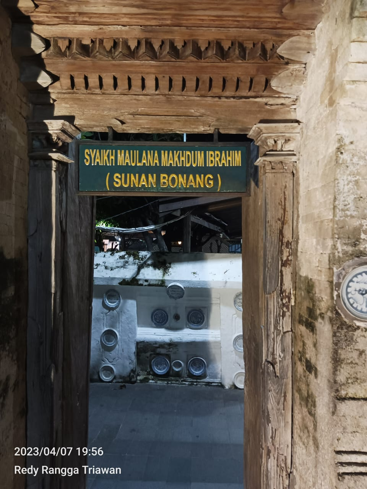

 Rest Area
Rest AreaTempat yang luar biasa! Saya sangat menikmati kunjungan ke lokasi ini. Keindahan alamnya memukau, dan fasilitasnya luar biasa.
Tempat yang bagus untuk bersantai dan menikmati alam. Area berenangnya fantastis, tetapi bisa menjadi ramai di akhir pekan.
Ini adalah destinasi liburan yang sempurna untuk keluarga. Anak-anak sangat menikmati waktu mereka di sini.
Tempat yang indah, tetapi saya berharap ada lebih banyak fasilitas di area ini.
Luar biasa! Saya akan merekomendasikan tempat ini kepada teman-teman saya. Pemandangan alamnya menakjubkan.
Tempat yang menyenangkan untuk bersantai dan melepaskan stres. Saya akan datang lagi.
Saya sangat senang berada di sini. Layanan pelanggan sangat baik dan ramah.
Tempat yang bagus untuk berkumpul dengan teman-teman. Kami memiliki waktu yang hebat.
Area berenangnya benar-benar menyenangkan. Saya sangat menikmati waktu di sungai.
Saya suka segalanya tentang tempat ini! Saya pasti akan kembali lagi.